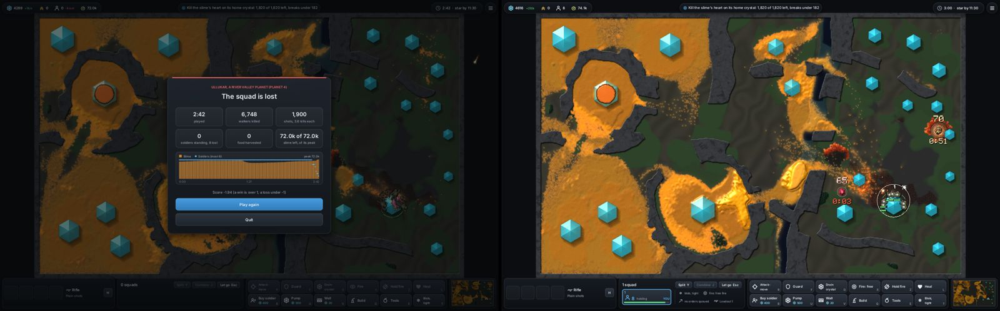

<title>March Counter</title>
<meta name="claude:viewport-fit-sides" content="cover">
<link rel="stylesheet" href="https://fonts.googleapis.com/css2?family=Space+Grotesk:wght@500;700&family=Inter:wght@400;600&family=JetBrains+Mono:wght@400&display=swap">
<style>
/* Layout: one reading column; each picture full width with its counts beside it in a small table. */
:root {
  --bg: #f6f3ec; --fg: #23211c; --muted: #6b665a; --line: #ddd6c6; --slime: #b86a00; --panel: #fffdf8;
  --display: "Space Grotesk", "Segoe UI", system-ui, sans-serif;
  --body: "Inter", "Segoe UI", system-ui, sans-serif;
  --mono: "JetBrains Mono", ui-monospace, monospace;
}
@media (prefers-color-scheme: dark) { :root:not([data-theme="light"]) { --bg: #17150f; --fg: #ece6d8; --muted: #a59d8b; --line: #3a352a; --slime: #f0a326; --panel: #1f1c15; color-scheme: dark } }
:root[data-theme="dark"] { --bg: #17150f; --fg: #ece6d8; --muted: #a59d8b; --line: #3a352a; --slime: #f0a326; --panel: #1f1c15; color-scheme: dark }
body { background: var(--bg); color: var(--fg); font: 15px/1.55 var(--body); }
main { max-width: 1320px; margin: 0 auto; padding-block: 28px 60px; padding-left: max(16px, env(safe-area-inset-left, 0px)); padding-right: max(16px, env(safe-area-inset-right, 0px)); display: grid; gap: 34px; }
h1, h2 { font-family: var(--display); text-wrap: balance; margin: 0; }
h1 { font-size: 2rem; }
h2 { font-size: 1.25rem; }
p { margin: 0; max-width: 68ch; }
.lede { display: grid; gap: 10px; }
.eyebrow { font: 12px var(--mono); letter-spacing: .06em; text-transform: uppercase; color: var(--slime); }
section { display: grid; gap: 12px; }
figure { margin: 0; display: grid; gap: 8px; }
figure img, figure video { width: 100%; max-width: 100%; height: auto; border-radius: 6px; background: #000; }
.pair-labels { display: grid; grid-template-columns: 1fr 1fr; font: 12px var(--mono); color: var(--muted); }
figcaption { color: var(--muted); font-size: 13px; max-width: 90ch; }
.tablewrap { overflow-x: auto; }
table { border-collapse: collapse; font-variant-numeric: tabular-nums; font-size: 13px; }
th, td { text-align: right; padding: 4px 12px; border-bottom: 1px solid var(--line); white-space: nowrap; }
th:first-child, td:first-child, th:nth-child(2), td:nth-child(2) { text-align: left; }
th { font-weight: 600; color: var(--muted); }
tr.on td { color: var(--slime); }
.rec { background: var(--panel); border: 1px solid var(--line); border-radius: 8px; padding: 16px 18px; display: grid; gap: 8px; }
code { font: 13px var(--mono); }
ul { margin: 0; padding-left: 20px; max-width: 80ch; }
</style>

<main>
  <div class="lede">
    <div class="eyebrow">Lab prototype · planet 4's late raids · not in the game</div>
    <h1>Feeding the march: a counter that found a different wall</h1>
    <p>A planet 4 march is born hungry: its 14,000 walkers leave at about half a birth's energy each. The prototype lets a hungry marcher that steps onto a charged crystal drop out of its march and eat, losing its orders and its armour. A squad fighting from a crystal would make whatever reaches it stop to eat first. Nothing new to place; it is the slime's own food rule.</p>
  </div>

  <section>
    <h2>The marches were not the wall here</h2>
    <div class="tablewrap">
      <table>
        <thead><tr><th>Rig, mini-bosses off</th><th>Seed</th><th>Off</th><th>Feeding</th></tr></thead>
        <tbody>
          <tr><td>on its crystal, raids from 0:30 every 40 s, 3:00</td><td>1</td><td>8 alive</td><td>8 alive</td></tr>
          <tr><td></td><td>2</td><td>8 alive</td><td>8 alive</td></tr>
          <tr><td></td><td>3</td><td>8 alive</td><td>8 alive</td></tr>
          <tr><td>raids at 2:00, 3:00, 4:00, at its landing, 4:30</td><td>1</td><td>8 alive</td><td>8 alive</td></tr>
          <tr><td>the same, on its crystal</td><td>1</td><td>6 alive</td><td>7 alive</td></tr>
        </tbody>
      </table>
    </div>
    <p>A squad of 8 holding still lost no one to a march of 1,600 to 16,800 walkers: the march stalls on the way and streams in, and the stream is shot down. Every squad wiped in this job fell to a mini-boss.</p>
  </section>

  <section>
    <h2>It does starve a mini-boss that goes for a crystal</h2>
    <figure>
      
      <div class="pair-labels"><span>off: lost at 2:42</span><span>feeding: 8 alive at 3:00</span></div>
      <figcaption>Planet 4, seed 2, squad of 8 on the crystal at 506,272. The same wanderer forms in both runs (507 and 499 walkers) and heads for the crystal at 437,283. Off, it keeps all 507, then comes on and kills 7 of the 8. Fed, its hungry walkers drop out on that crystal: 336 by 2:13, 152 by 2:43, and it never reaches the squad.</figcaption>
    </figure>
    <div class="tablewrap">
      <table>
        <thead><tr><th>Seed, where</th><th>Mini-boss</th><th>Off</th><th>Feeding</th></tr></thead>
        <tbody>
          <tr><td>1, landing</td><td>Pinwheel both</td><td>lost 1:24</td><td>lost 1:30</td></tr>
          <tr><td>1, crystal</td><td>Pinwheel / Mortar (not a pair)</td><td>lost 1:32</td><td>8 alive</td></tr>
          <tr class="on"><td>2, crystal</td><td>wanderer both</td><td>lost 2:42</td><td>8 alive</td></tr>
          <tr><td>3, crystal</td><td>wanderer both</td><td>8 alive</td><td>8 alive</td></tr>
        </tbody>
      </table>
    </div>
    <p>One clean pair (seed 2): a lead, not a result. Hunger alone (no armour while hungry) was tried first and dropped, since marches are always hungry: it is a flat cut, not a counter.</p>
  </section>

  <section class="rec">
    <div class="eyebrow">Recommendation</div>
    <p><b>Not a march counter yet; a lead as a mini-boss counter.</b> In this rig a still squad of 8 is never broken by planet 4's marches, only by its mini-bosses, so there was no march wall to counter. Next: rerun feeding in the game where the march is the wall (a bot league game or the owner's), or test it on more seeds with the same mini-boss in both arms. Nothing for Enemy to build yet.</p>
    <p>Card, if it lands: "Its raids are starving: make them cross food and they stop to eat."</p>
    <p>Report: <code>Reports/lab-march-counter-2026-11-24/README.md</code>. Code on the lab branch only, <code>14ba8f8f</code> (<code>LAB_FEED</code>).</p>
  </section>
</main>
